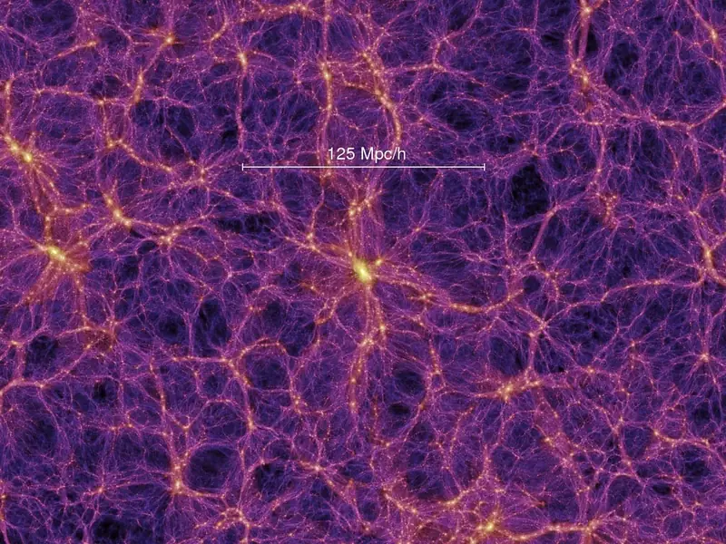
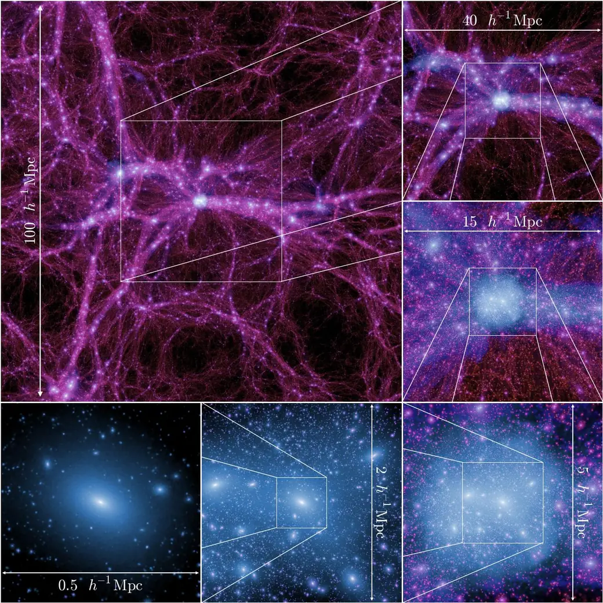
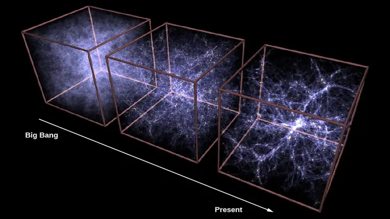
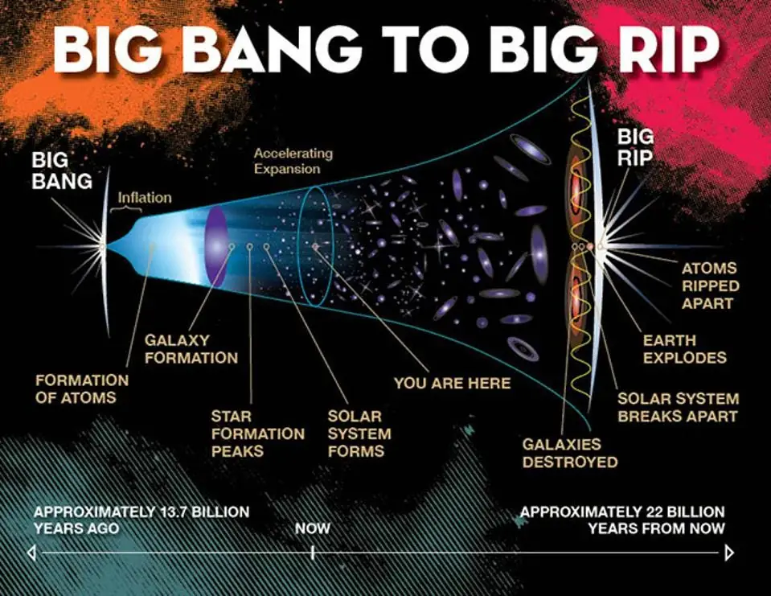
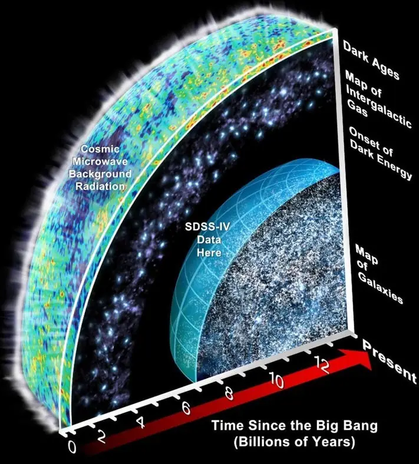
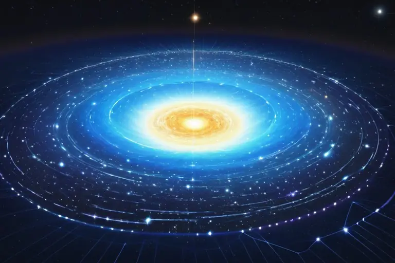
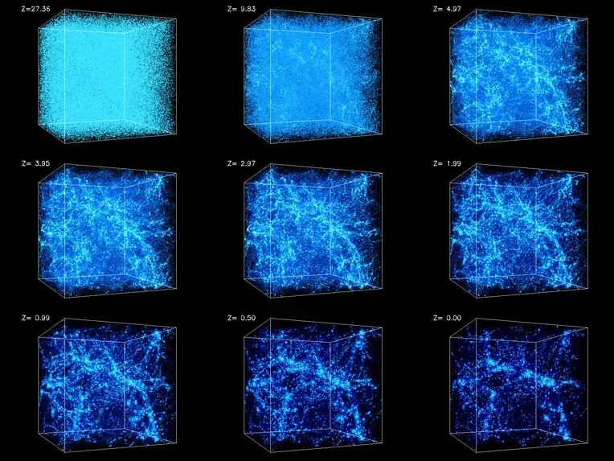
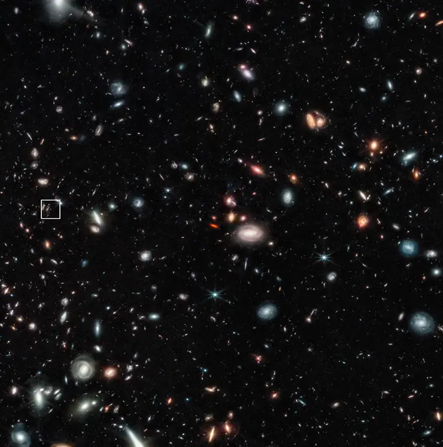
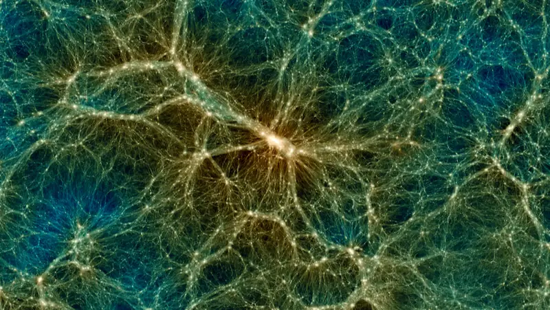

Intro - Part 1 - Universe
This is about my real life personal view on the universe, life and death as a human being.

I would summarize it like this:
1. The universe never began and will never end. There is no such thing as "heat death of the universe" or any sort of "death of the universe" for that matter.
2. We humans are sort of immortal, or at least our souls are. The problem is that it isn't necessarily a fun thing.
Let's start with the first one. I'll talk about the second one in Part 2 of this article.
The Infinite Universe and the Big Bang Event
My guess is that the universe is infinite, both in terms of how big it is and in terms of its longevity. It is infinitely large and will never expire.

The so called 'Big Bang Theory' is something I think it just one mundane event that occasionally happens in the universe when either:
a) One area accumulates far too much material (super massive black hole or something even bigger) and the physics just explode to dissipate that built up "pressure".
b) An area that is starved so much from any kind of material to such an extreme scale that it evokes a natural cosmic phenomenon that acts to break apart this imbalance. Maybe something to do with dark matter or antimatter.

Such a big bang event is certainly large when looked at from a human perspective, but if zoomed out in the face of the infinite scale of the universe it too might just be another "normal" thing that happens once a while. And I think it's just that: a normal event - a self-correcting mechanism of the universe.
Of course, I think it’s rare too. The conditions for a big bang event must be quite extreme for it to happen. More commonly the universe doesn’t need to do anything so drastic to keep itself stable and harmonious; the regular cycle of stars going nova or supernova is usually enough to reset local space after it has come to the end of its lifecycle.
Normally things might pile up in some areas a bit, but they’ll quickly dissipate and become material for new stars, recycling the stellar material endlessly.
The rare big bang event is likely to occur only when giant groups of galaxies are on a collision course due to the chaotic nature of long term trajectories of things in space.
Or it could be something equally extreme that might happen once a trillion years or something along those lines as part of the universe’s self-cleaning functions.
But either way a big bang doesn’t affect all of the universe; just one “small” section of it. Granted, that “small” section is still so big to us humans that we end up falsely thinking that it was the entirety of the universe when that isn’t the case.
The idea of “the universe ending” is stupid to me

I often look at the theory of the "heat death of the universe" and that famous picture of "the observable universe" and scoff at them because I think people aren't paying attention to the word "observable" in it. If all we can see is only a part of something larger then we have no right to claim that something is certain.
Not to mention humanity hasn't actually even walked outside its solar system, merely only sending a pathetic probe with old tech that may be interfered with by space phenomena that humans still don't know anything about.

The blurry pictures of those telescopic satellites aren't that convincing either - there's too much guessing and assumptions involved, often not taking into account things because they're either unknown or that we don't even have the instruments to detect it.
My message would be to tell those that feel apathetic about the world being meaningless because "muh heat death of the universe" is to stop worrying about something that could be nonsense and consider that perhaps the universe is infinite and endless.
This influenced how I design universe simulations
On the side of game design, particularly in regards to my projects Topverse, RoomSpace, Planet Warfare and Admiral Wars Beyond…

...this view of mine is what shapes the universes that I build; they do not have a built in assumption that they will expire or eventually cool off and die. Instead, they will continue operations indefinitely until unless the player reinstalls the game another machine elsewhere or something unfortunate happened to their previous save that they weren't able to transfer or recover it to their new computer.
The only difference is that my universes are only partially infinite in terms of their size.
Computer hardware has and always will have limitations for hard drive space, memory and processing power, so when something like Minecraft introduces literally infinite worlds I can't help but wince at how stupid that is.
For one, running out of disk space should be something a game or any software avoids at all costs. It feels awful when you notice that the game has essentially messed up your computer to the point of making it inoperable due to it filling up the drive with crap or by using up its resources so badly that the entire computer becomes unresponsive.
Secondly, an endless universe is not necessary when a human being can only be at one place at any given time and focus on one thing at any given time. In Minecraft, most of the generated area ends up sitting completely unused or used only once or twice and then forgotten.
An ingame universe envisioned as a bowl
With these things in mind, my universes are modeled like a bowl; the center "flat" area is the active universe that has permanent locations and persistent entities meanwhile the curved areas surrounding it are a virtually endless "wilderness" zone where things from the center may drift into and then be ejected back out, often reshuffled or mutated.

The center flat area is usually just a of anywhere between 3 to 9 superclusters (or galaxies) arranged compactly in the middle. The number or type depends on how big the universe needs to be per particular game project.
For some projects, keeping it to a few galaxies is plenty enough. Often the deciding factor lies within how detailed is the moment-to-moment gameplay area and how much granularity is expected of the player - i.e. is it an RTS/4X game where player is commanding high-level stuff on a global scale or playing an FPS/Platformer where they are in direct control of an individual that has to deal with small items at the local scale.
In theory, the player could create conditions for a big bang event to occur but it would only happen on the scale of a supercluster (or galaxy), effectively resetting only that area of the universe.
In-game mechanics wise there are no methods to detonate the whole universe - you could do only one section at a time. This essentially emulates the idea that a big bang event isn't the beginning or the end of the universe, but a mere extreme and rare localized disaster event.
Start the game universe already in motion
As for the beginning of the universe in my games: there isn't one - everything just starts off in motion as far as gameplay is concerned - the entire universe and the worlds within it are procedurally generated mid-motion in relative equilibrium and just start from there, without a mechanism to eventually end it.
It makes no sense to start a universe in some kind of primordial state or just after a big bang; everything is just particles, dust and gas. There are no planets, stars or galaxies, let alone anything interesting on them like civilizations or nature.
Lorewise one could argue that maybe in the ancient past the universe simply willed itself into existence as an infinite uniform mesh of matter and antimatter affected by natural forces that eventually coalesced into what we recognize today as atoms bound together and formed the planets, stars and galaxies around us.

But my point is that I don’t think it was “the big bang” that started it all; the universe just materialized itself everywhere all at once without a single point of origin.
After that, the forces of physics, nature, chemistry and mathematics shaped it into what we see around us today over the course of many millions of years.
Big bang is just something that occasionally happens around the universe when a particular area goes out of balance to an extreme degree. This is merely a natural automatic corrective measure to keep the greater universe as a whole in equilibrium and harmony.
Since no matter or antimatter can be created or destroyed in our universe and it can only change into a different state/phase/type, I think the universe constantly strives to maintain relative equilibrium by its very nature. This allows it to stay infinite forever by design.
I also want to mention that the point of origin certainly isn’t humanity itself; the universe doesn’t revolve around us. I think we’re just one small player in it trying to grow big, achieve physical immortality and optimize our lives to be as awesome as possible.
My thoughts on mysteries of our universe
In regards to humanity, we should look out for signs of a potential big bang event happening in our surroundings and act accordingly to dodge out of the way into another part of the universe if we wish to avoid its destructive power.
Or… maybe we could even defuse it from happening if it seems feasible and sensible enough technologically; I have no idea how far the technology of mankind can potentially evolve.
Perhaps we could even eventually harness a big bang event for our benefit?

How or why did the universe create itself into existence?
Was it some kind of higher beings that did it, like god or all our souls of the astral plane?
What even is god or souls? How did they manifest into existence in the first place if they exist?
Heck if I care.
I'm merely glad we have such a vast and beautiful universe and that it's probably infinite and endless in every sense of the word.

The true origin is something probably no one will ever truly know, but I don't think it matters when the present moment is already plenty exciting and the future is endless with infinite potential.
In part two I'll talk about my real life views on life and death.
Talk about it
Questions, disagreements and ideas of your own are all welcome. Discuss this article with other readers on the Reactorcore Games Discord, follow new articles and dev news on Patreon, or write to me directly.